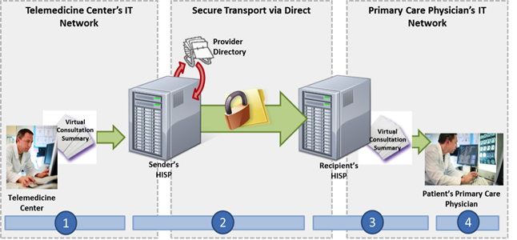

NwHIN 1.0 Portfolio > Scenarios > Sending a Virtual Consultation Summary to another Physician
Sending a Virtual Consultation Summary to another Physician
A provider sends video and audio consultation summaries to another provider:

A patient living in a rural town visits a nearby telemedicine center to receive a virtual consultation from a subspecialist. After the patient’s visit, the telemedicine center transfers any video/audio files resulting from the patient’s visit to patient's primary care physician.
 |
Meaningful Use Stage 1 Objectives related to clinical information exchange: Capability to exchange key clinical information (for example, problem list, medication list, medication allergies, and diagnostic test results), among providers of care and patient authorized entities electronically. (Meaningful Use Menu Set 14 for EPs, Meaningful Use Menu Set 7 for EH/CAHs; valid until 2013) |
Common workflow steps for this scenario:
 |
A patient is seen via a virtual consultation session at a telemedicine center by a subspecialist located elsewhere in the state. The consultation with the subspecialist is recorded and, in order to aid in the reduction of diagnostic ambiguity, the session is sent directly to the patient’s referring primary care physician. A representative at the telemedicine center authors a Direct message and attaches the relevant audio/ video files which are structured according to the HITSP C62 and Consolidated CDA Implementation Guide v 2.0 specifications. The message is constructed using LOINC 2.38, SNOMED CT, RxNorm, and Unified Medical Language System vocabularies. In order to select the primary care physician as the recipient, the representative accesses a search dialogue in the Health Information Service Provider’s (HISP) user interface, which queries a Provider Directory (following the Certificate Discovery for Direct implementation guide) for the correct Direct address. | |
| When the representative sends the message, it passes through the telemedicine center’s Health Information Service Provider (HISP), a contracted brokering agent responsible for the management of security and transport for directed exchange. As it passes through the HISP, the message is encrypted using the x.509 Certificate associated with primary care physician’s Direct address, and delivered to the primary care physician’s Direct address in accordance with the Applicability Statement for Secure Health Transport. | ||
| The primary care physician’s HISP decrypts the message and routes it to the primary care physician. | ||
 |
The primary care physician uses the HISP’s user interface to access the audio and visual files from the virtual consultation in his Direct inbox. |
NwHIN 1.0 specifications and resources recommended for scenario:
Content StructureGuidance that specifies how to structure health information to ensure proper exchange |
|
Vocabulary & Code SetsSpecifications that identify common naming convention necessary for proper health information exchange |
|
Transport and SecurityMechanisms and processes that safely exchange health information over the Internet |